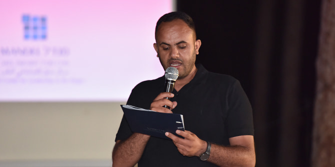
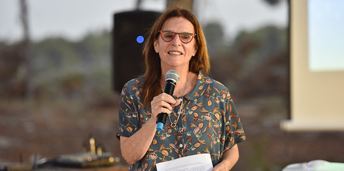

תוכנית מנדל למנהיגות אזורית בכסייפה ובערערה-בנגב, בהובלת קאסם אלצראיעה וד"ר רותם ברסלר גונן, מורכבת מ-14 עמיתים ועמיתות המתגוררים או פועלים באזור כסייפה וערערה-בנגב ונמצאים בעמדות מפתח ביישובים אלו. המשותף לכולם הוא היכרות עמוקה עם השטח ורצון עז להשפיע ולחולל שינוי.
"הרכיב המעשי" הוא אחד מרכיביה המרכזיים של תוכנית ההכשרה, וביטוי למעשה המנהיגות של העמיתים המשתתפים בתוכנית. העמיתים שהגיעו לשלב הסיום הציגו את תוצר הרכיב המעשי שעליו עבדו במסגרת התוכנית – חוברת ניירות העמדה "קול מהשטח", העוסקת בנושאים: חינוך, בריאות וצעירים בחברה הערבית-בדואית בנגב. החוברת היא תוצר עיוני-מעשי של פרויקטים קבוצתיים של עמיתי התוכנית.
קבוצת החינוך, בחרה לעסוק בנושא "מעורבות הורים בבית הספר", מתוך התפיסה שלמעורבות הורים השפעה מרחיקת לכת הן על הישגי התלמידים והן על אקלים בית הספר, ולכן הגברת מעורבות ההורים יכולה לחולל שינוי מעמיק לא רק עבור התלמידים, אלא גם עבור בית הספר, ההורים והקהילה כולה.
קבוצת הבריאות בחרה לעסוק בפערים הקיימים בין יהודים לערבים בכלל ובין האוכלוסייה הכללית לחברה הבדואית בפרט, בכל הנוגע למצב הבריאות. הקבוצה התמקדה בשיעורי התחלואה במחלות השכיחות בחברה הערבית-בדואית בנגב, המשפיעות על איכות החיים ואורך חייהם. כמו כן, העמיתים סקרו את הקשר שבין המחלות המתפרצות לאופי חייה המיוחד של החברה הבדואית בנגב ולתרבותה הייחודית.
בקבוצת הצעירים, העמיתים בחרו לעסוק בשאלה מהם הצרכים של הצעיר הבדואי בנגב במציאות של חברה משתנה. קבוצת הצעירים (בני 25-18) לעתים נופלת בין הכיסאות. להבדיל מצעיר יהודי, צעיר בדואי אינו מתגייס לצבא ואין לו הזמן והמסגרת להמשיך "להתבשל" ולהרחיב את נקודת מבטו להמשך דרכו כאזרח. חזון קבוצה זו הוא שילוב צעירים אלו במסגרות ההשכלה והתעסוקה באמצעות יצירה של מערכת תמיכה והכוונה לחייהם הבוגרים. כמו כן, הקבוצה עמדה על ההבדלים בין הצעירים-גברים לצעירות-נשים בחברה הבדואית, ונתנה מקום בנייר העמדה לשתי הקבוצות.
שלושת ניירות העמדה משקפים תהליך למידה משמעותי שעברו העמיתים בתוכנית, והזדמנות של מנהיגות אמיצה ואחראית להשמיע את קולה בקרב מקבלי החלטות וקובעי מדיניות בשפה מקצועית. ניירות אלו עוסקים בנושאים רלוונטיים ומשמעותיים להתמודדות עם האתגרים הייחודיים של החברה הערבית-בדואית בנגב והוכחו כרלוונטיים מתמיד בתקופת מגפת הקורונה.

מנהל התכנית,
קאסם אלצראיעה, אמר בטקס לבוגרי התוכנית כי "כל מי שקורא את ניירות העמדה שהכנתם לאחר תהליך ארוך של התלבטויות, דיונים, שיח ואף ויכוחים ערכיים נוקבים - יכול רק להתפעל מאיכות התוצר ומחשיבתו למרות ואפילו על אף תקופת מגפת הקורונה. תוצר זה אינו מובן מאליו, התודעה הקבוצתית שלכם לחשיבות הפרויקטים הקבוצתיים והוויתור על רכיב מעשי אישי, מתוך הבנה שהאתגרים המעסיקים אתכם הם זהים - היא הוכחה למנהיגות שלכם, שבה מתגבר האינטרס הקבוצתי על האישי. כפי שתיאר זאת ההיסטוריון אבן ח'לדון: 'המנהיגות אינה באה אלא כתוצאה של התגברות, וההתגברות אינה באה אלא בזכות התודעה הקיבוצית'".
אלצראיעה המשיך ואמר כי ניירות העמדה הקבוצתיים שהעמיתים פיתחו יוצאים מתחום העיסוק הקונקרטי של כל אחת ואחד מהם, לשדות פעולה רחבים, חשובים ומהותיים יותר. סגל התוכנית רואה בניירות אלו הצלחה של מסע הלמידה והוא גאה בדרך שבה העמיתים חשבו בגדול, והביאו לקדמת הבמה שיח בנושאים חשובים שזקוקים לטיפול, ובכך שהם לא רק תיארו את הבעיות של החברה הערבית-בדואית בנגב, אלא גם קבעו את עמדתם והציעו מתווים לפתרונות ממשיים.
מנכ"ל קרן מנדל-ישראל,
משה ויגדור, שלח את ברכתו מעוררת ההשראה בסרטון וידאו שהוקרן בטקס הסיום החגיגי. בדבריו ביסס את תחושת השייכות של הקבוצה למעגל הרחב של קרן מנדל-ישראל והנכיח את חזונו של מר מורט מנדל ז"ל לקידום חברה מקבלת, מכילה ופלורליסטית במדינת ישראל, ואת ההוקרה הרבה לצד הציפייה מבוגרינו: "מורט מנדל ז"ל הקים את הקרן בישראל בשנת 1962 במחשבה שיבואו לתוכניות אנשי בעלי יכולת, חזון, דחף ורצון לשנות ולעשות טוב יותר לחברה הישראלית. כל אחד ואחת מכם אמור לעשות שינוי לטובה, כל אחד בתחום שלו, אבל ביחד יש לזה אפקט מצטבר שמשפר את החיים בישראל. מורט מנדל מאוד חסר לנו בימים אלו, תבונתו, חוכמתו, תושייתו וראייתו האופטימית. הוא תמיד היה אומר לבוגרים שבאו להודות לו 'אל תודו לי, אני מודה לכם כי אתם עושים את העבודה שלי, כי אתם תלכו לשטח ותעשו את החברה הישראלית טובה יותר', אז מצד אחד אנחנו מצפים מכם ללא מעט, אך ברוחו של מורט, גם מודים לכם על העבודה הטובה שאנחנו יודעים שתעשו".

מנהלת מרכז מנדל למנהיגות בנגב,
ד"ר עדי ניר שגיא, בירכה את הבוגרים הטריים: "מסע הלמידה שלכם מסתיים. דרך של למידת עומק, שיח בוחן וביקורתי בחשיבה על אתגרי המנהיגות בנגב. מהלך ששם לו כחזון וכערך את המחויבות לשיפור איכות החיים של החברה הערבית-בדואית בנגב על-ידי כל אחת ואחד מכם. המשכו יבוא לידי ביטוי בעשייתכם כבוגרי מרכז מנדל למנהיגות בנגב בימים שיבואו בעת הקרובה, תוך מחויבות ואומץ". עדי התייחסה לכך שהעמיתים בחרו להמשיג סוגיות מורכבות תוך התבוננות בערכי המסורת לצד חיפוש אלטרנטיבות היוצרות שינוי. עדי ציינה את הפרדה העצובה השנה ממייסד הקרן מר מורט מנדל ז"ל, שראה בכל אחד ואחת מהעמיתים אותם אנשים שטמון בהם הסוד: "גם אדם אחד יכול לשנות את העולם. רעיונות רבי-עוצמה שאנשים יוצאים מן הכלל מיישמים, מייצגים דרך ודאית להדליק עוד נרות ומסייעים בהארת העולם". עדי הדגישה את אמונה הרב בכל אחד ואחת מהבוגרים ואת הציפייה שימשיכו בדרך של עשייה משנה עולם המיטיבה עם הקהילה והחברה בנגב.
העמיתים הודו בהתרגשות לקרן מנדל ולמרכז מנדל למנהיגות בנגב על ההזדמנות שנפלה בחלקם לעבור תהליך משמעותי ועמוק, וציינו כי עבורם סיום התוכנית אינו סופה של הדרך, אלא סגירת מעגל והתחלת מסע של שינוי ועשייה במרחב הנגבי.
קראו את חוברת ניירות העמדה "קול מהשטח" >>
{kind=link}
{kind=link}
{kind=link}